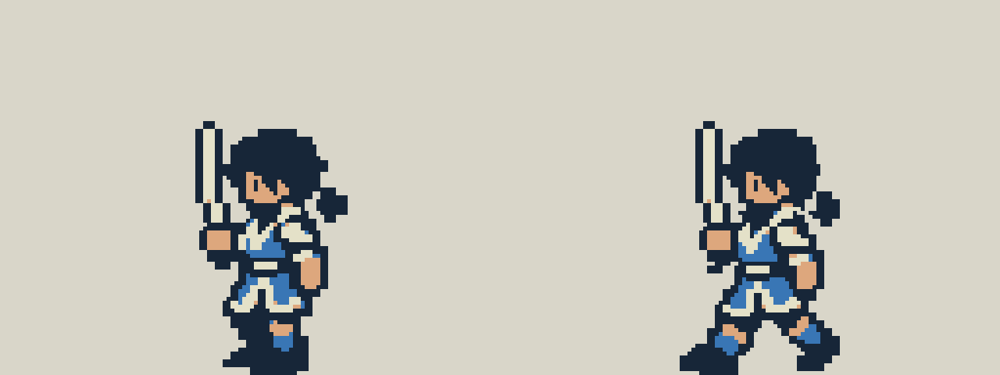
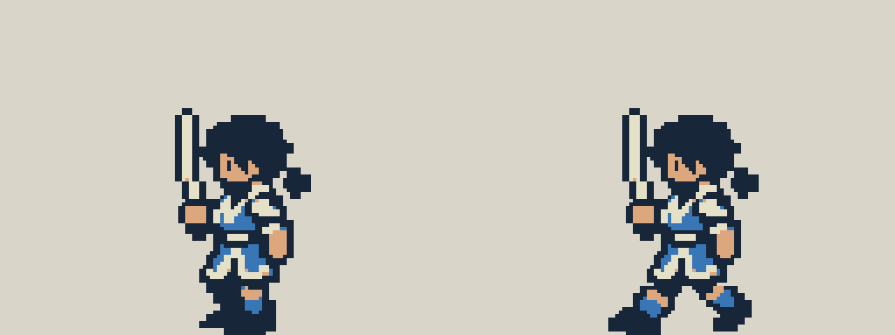

佣兵向左行走 · 头颈与上半身固定
两帧共用完整头颈、上身、手臂、武器和短衣下摆，保留站直与跨腿的腿部变化。友方、敌方及村民复用形象同步，已接入 0.8.8 测试包。
修改前后


双方向左行走演示
可在“全动作对照”中慢放，检查第一个和第二个腿部相位。
本稿已验收，并随佣兵及首关村民复用形象接入 0.8.8 测试包。
两帧共用完整头颈、上身、手臂、武器和短衣下摆，保留站直与跨腿的腿部变化。友方、敌方及村民复用形象同步，已接入 0.8.8 测试包。


可在“全动作对照”中慢放，检查第一个和第二个腿部相位。
本稿已验收，并随佣兵及首关村民复用形象接入 0.8.8 测试包。